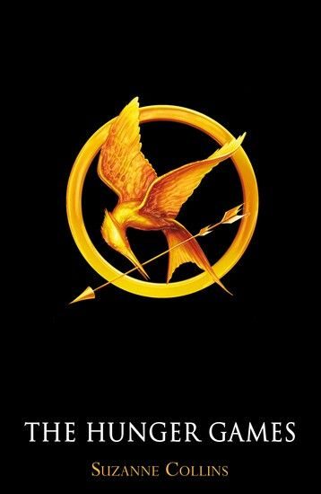

The Hunger Games follows 16-year-old Katniss Everdeen, a girl from District 12 who volunteers for the 74th Hunger Games in place of her younger sister Primrose Everdeen. Also selected from District 12 is Peeta Mellark, who once saved Katniss from starvation when they were children. They are mentored by their district's only living victor, Haymitch Abernathy, who won 24 years earlier and has since led a solitary life of alcoholism. Peeta confesses his longtime secret love for Katniss in a televised interview prior to the Games. This revelation stuns Katniss, who usually does not allow herself to think of romantic attraction due to her traumatic childhood and her fear of losing future children to the Hunger Games. However, she believes that Peeta is only feigning love for her as a tactic for the Games. In the arena, Peeta saves Katniss's life multiple times without her realizing. Katniss allies with Rue, a young tribute from District 11 who reminds Katniss of her sister. When Rue is killed, Katniss places flowers around her body as an act of defiance toward the Capitol. The remaining tributes are alerted to a rule change allowing tributes from the same district to win as a team. Katniss finds a seriously wounded Peeta, and, rather than competing alone and being unencumbered by him, she risks her life and nurses him back to health. Haymitch advises her to feign feelings for Peeta in order to gain wealthy sponsors who can provide crucial supplies to the "star-crossed lovers" during the Games. As she allows herself to get close to Peeta, she develops real feelings for him. When all of the other tributes are dead, the rule change is abruptly revoked. With neither willing to kill the other, Katniss comes up with a solution: a double suicide by eating nightlock, a poisonous berry. This forces the authorities to concede that they have both won the Games, just in time to save their lives. During and after the Games, Katniss's genuine feelings for Peeta grow, and she struggles to reconcile them with the fact that their relationship developed under duress. Haymitch warns her that the danger is far from over. The Capitol is furious toward them due to their act of defiance, and the only way to try to allay its anger is to continue to pretend that her actions were solely because she was madly in love with Peeta. On the journey home, Peeta is dismayed to learn of the deception.
<<<<<<< HEADSuzanne Collins is the author of The Hunger Games trilogy, known for creating a gripping dystopian world where survival, politics, and media collide. Before writing the series, she worked in children’s television and drew on her experience with storytelling and war reporting to craft intense, character-driven narratives. Collins’s work often explores the costs of violence and the strength of young people forced to face impossible choices, making her one of the most influential voices in modern young adult fiction. Her books have been translated into dozens of languages and adapted into a major film series, which introduced her themes to an even wider global audience.
======= >>>>>>> e3ca0e7900b5f961ab7b84babde1008c76000310